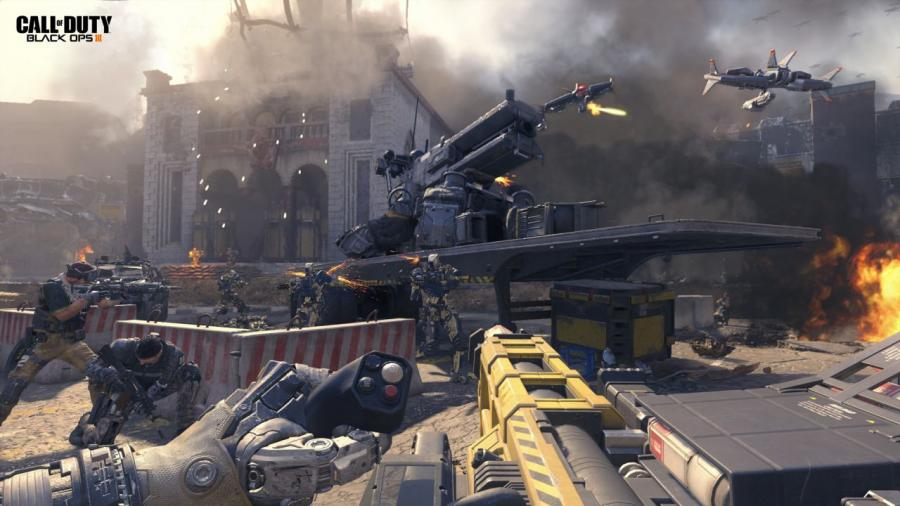
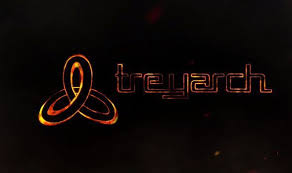

Call Of Duty-Black OPS III (2015)
Tema: FPS - Ação - Tiro Primeira Pessoa
“Call of Duty®: Black Ops 3 é o primeiro título para os hardwares de nova geração da aclamada série Black Ops. Desenvolvido pela Treyarch, o criador premiado dos dois jogos mais jogados da história de Call of Duty. Call of Duty: Black Ops 3 levará os jogadores para um futuro sombrio, torcido, onde uma nova geração de soldados Black Ops surge e as linhas são borradas entre a nossa própria humanidade e a tecnologia que foi criada para ficar à frente, em um mundo onde militares e ponta robótica definem guerra. Com três modos de jogo exclusivos: Campanha, Multiplayer e Zombies, é oferecer aos fãs com a mais profunda e mais ambiciosa de Call of Duty da história.”
Imagens Adicionais
- 
- 